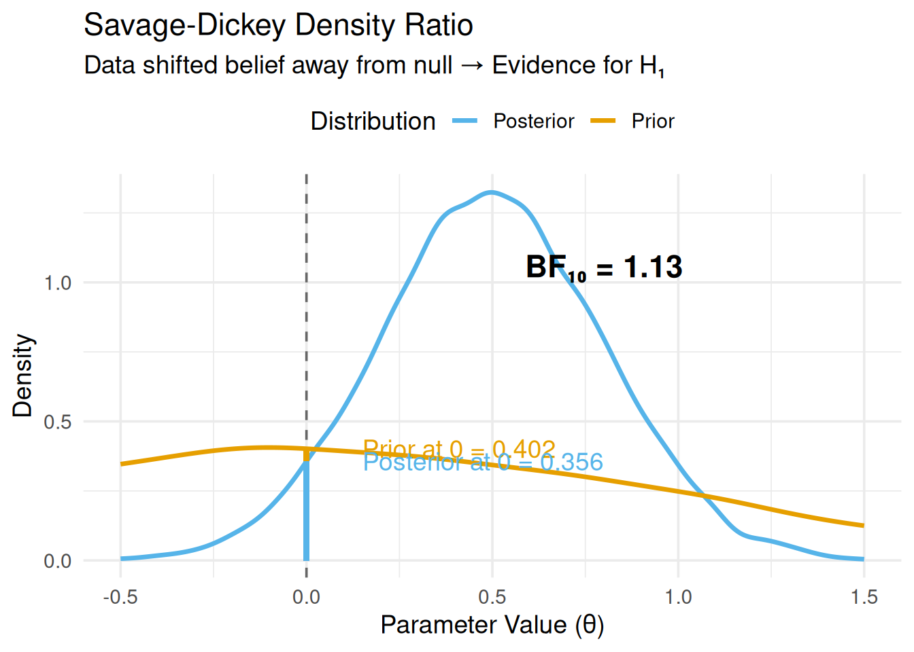

Show code
library(ggplot2)
# Simulate prior and posterior
set.seed(123)
prior_samples <- rnorm(10000, 0, 1)
posterior_samples <- rnorm(10000, 0.5, 0.3)
# Estimate densities
prior_density <- density(prior_samples, from = -0.5, to = 1.5)
posterior_density <- density(posterior_samples, from = -0.5, to = 1.5)
# Heights at null (θ = 0)
prior_at_0 <- approx(prior_density$x, prior_density$y, xout = 0)$y
posterior_at_0 <- approx(posterior_density$x, posterior_density$y, xout = 0)$y
# Bayes Factor
BF_01 <- posterior_at_0 / prior_at_0
BF_10 <- 1 / BF_01
# Plot
df_prior <- data.frame(x = prior_density$x, y = prior_density$y, Distribution = "Prior")
df_posterior <- data.frame(x = posterior_density$x, y = posterior_density$y, Distribution = "Posterior")
df_combined <- rbind(df_prior, df_posterior)
ggplot(df_combined, aes(x = x, y = y, color = Distribution)) +
geom_line(linewidth = 1.2) +
geom_vline(xintercept = 0, linetype = "dashed", color = "gray40") +
geom_segment(x = 0, xend = 0, y = 0, yend = prior_at_0,
color = "#E69F00", linewidth = 1.5, alpha = 0.7) +
geom_segment(x = 0, xend = 0, y = 0, yend = posterior_at_0,
color = "#56B4E9", linewidth = 1.5, alpha = 0.7) +
annotate("text", x = 0.15, y = prior_at_0,
label = paste0("Prior at 0 = ", round(prior_at_0, 3)), hjust = 0, color = "#E69F00") +
annotate("text", x = 0.15, y = posterior_at_0,
label = paste0("Posterior at 0 = ", round(posterior_at_0, 3)), hjust = 0, color = "#56B4E9") +
annotate("text", x = 0.8, y = max(df_combined$y) * 0.8,
label = paste0("BF₁₀ = ", round(BF_10, 2)),
size = 6, fontface = "bold") +
labs(
title = "Savage-Dickey Density Ratio",
subtitle = "Data shifted belief away from null → Evidence for H₁",
x = "Parameter Value (θ)",
y = "Density"
) +
scale_color_manual(values = c("Prior" = "#E69F00", "Posterior" = "#56B4E9")) +
theme_minimal(base_size = 14) +
theme(legend.position = "top")